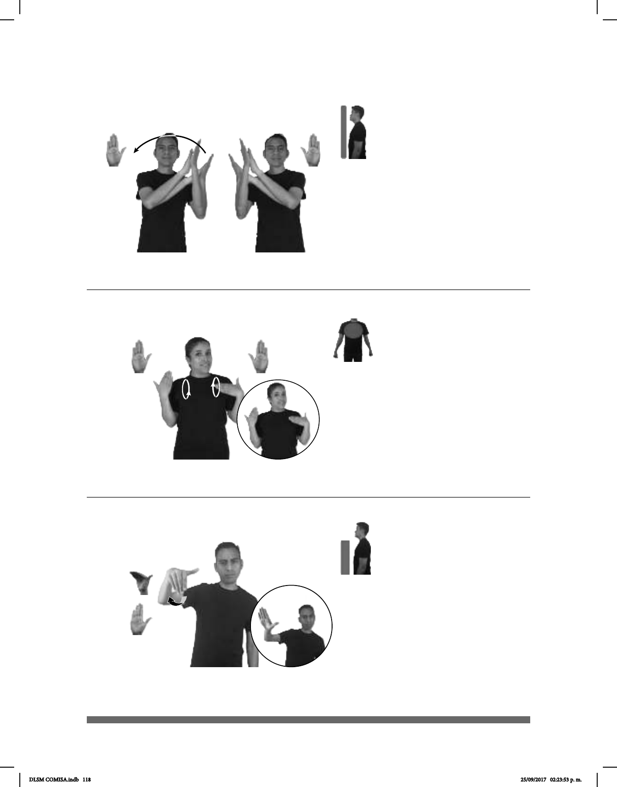

118
(B-P 22)
1
2
CRISTO ALABAR
Alabo a Cristo.
(B-P 23)
1
2
3
/
4
___muy
ESTA FIESTA DIVERTIDA
(B-P 24)
_____¡ !
ALÉJATE pro-YO ENOJADA
¡Aléjate! Estoy enojada.
Seña: SS
B-P.2
Las palmas se encuentran
frente a frente.
A la altura del rostro.
Las manos simulan
pequeños aplausos mientras se mueven
formando un arco de izquierda a derecha.
1. v. tr. Manifestar el aprecio
o la admiración por algo o por alguien,
poniendo de relieve sus cualidades o
méritos. 2. sust. f. Expresión o conjunto
de expresiones con que se alaba.
La seña se usa en la
comunidad sorda Amistad Cristiana e
Iglesia de Cristo.
Seña: SS
B-P.2
Palmas hacia adentro.
Sobre el pecho.
De atrás hacia adelante
alternadamente.
Se esboza una
sonrisa.
1. sust. f. Sentimiento grato y
vivo que suele manifestarse con signos
exteriores. 2. v. tr. Percibir o gozar los
productos y utilidades de algo. 3. v. tr.
Ensalzar públicamente a un ser sagrado o un
hecho solemne, religioso o profano,
dedicando uno o más días a su recuerdo. 4.
adj. Que produce alegría y distracción.
Seña: SM
Seña que pasa
de B-P.7 a B-P.2
La palma inicia hacia
adentro y termina hacia afuera.
A la altura del pecho.
Recto hacia enfren-
te.
v. tr. (uso imperativo)
Distanciar, llevar a alguien o algo
lejos o más lejos.
DLSM COMISA.indb 118 25/09/2017 02:23:53 p. m.